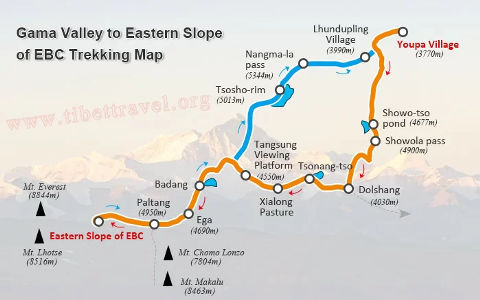
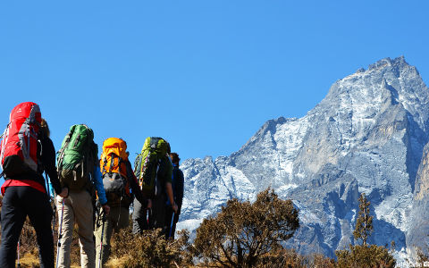
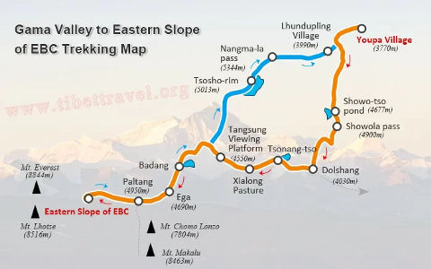
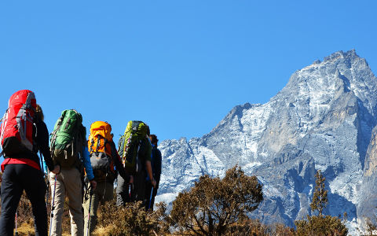
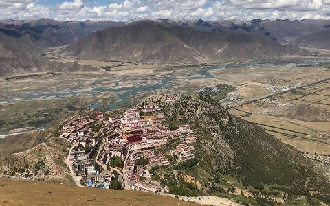
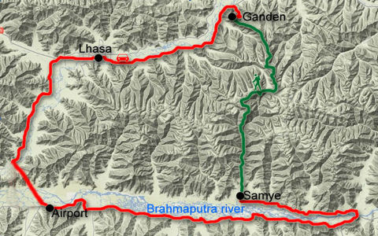
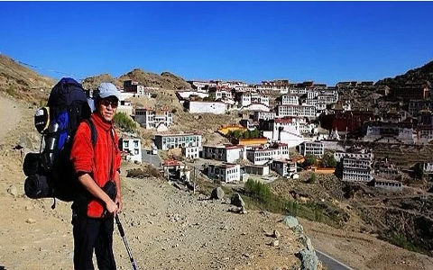
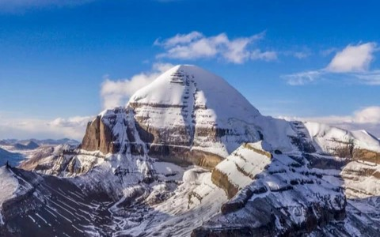
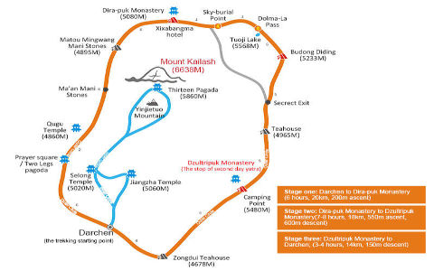
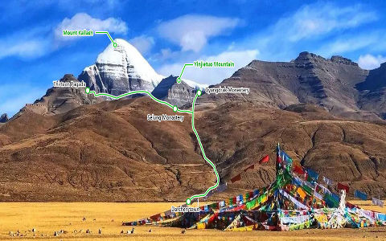

Hiking au Tibet
Explorez les sentiers accidentés et les randonnées en haute altitude du Tibet. Les itinéraires populaires incluent le circuit du mont Kailash et le trek de Ganden à Samye.
-
Mount Everest(Chomolungma) Base Camp Trek
Le versant tibétain du mont Everest, connu localement sous le nom de Chomolungma, offre l’une des vues les plus spectaculaires sur le plus haut sommet du monde. Contrairement au côté népalais, le camp de base nord du Tibet est accessible par la route, permettant aux visiteurs de découvrir la majestueuse montagne sans avoir besoin d'une randonnée épuisante. La route vers le camp de base offre une vue panoramique sur la chaîne himalayenne, avec l'imposant Everest dominant l'horizon. Au camp de base, les visiteurs peuvent explorer le monastère de Rongbuk, le plus haut monastère du monde, qui offre un point de vue serein sur l'Everest. Le glacier Rongbuk situé à proximité est un élément frappant, mettant en valeur la puissance brute de la nature et la beauté immaculée de la région. Par nuit claire, l'observation des étoiles au camp de base de l'Everest offre une expérience surréaliste, avec la Voie lactée s'étendant dans le ciel au-dessus du puissant sommet.
 



-
Ganden to Samye Trek
Le trek de Ganden à Samye est l'un des itinéraires de randonnée les plus populaires du Tibet, alliant beauté naturelle et signification spirituelle et culturelle. Cette randonnée de 80 kilomètres vous emmène du monastère de Ganden au monastère de Samye, en passant par des cols de haute altitude, des villages isolés et de superbes paysages alpins. La randonnée n'est pas seulement un défi physique mais aussi un voyage spirituel, alors que vous traversez des lieux sacrés et vous connectez à la culture bouddhiste tibétaine. Les points forts incluent la traversée du col Shugu La à 5 250 mètres et le camping dans une nature sauvage immaculée sous le ciel étoilé.
   -
Mount Kailash Kora
Dans la tradition bouddhiste, le mont Kailash représente le mont Meru. Selon les croyances, Meru est un centre de cosmologie. De la même manière que tout tourne autour de Meru, les pèlerins tournent autour du mont Kailash.De plus, l’histoire de Kailash est liée à Milarepa, qui méditait dans les grottes autour de la Montagne. Milarepa est un yogi célèbre et l’un des fondateurs de l’école Black Hat du bouddhisme tibétain. Milarepa combattait également avec le maître de la religion Bon Naro Bonchung près du mont Kailash. Il existe encore de nombreux sites portant les traces de cette bataille légendaire. Selon les bouddhistes, le sommet du Kailash abrite le Bouddha Demchok.
  